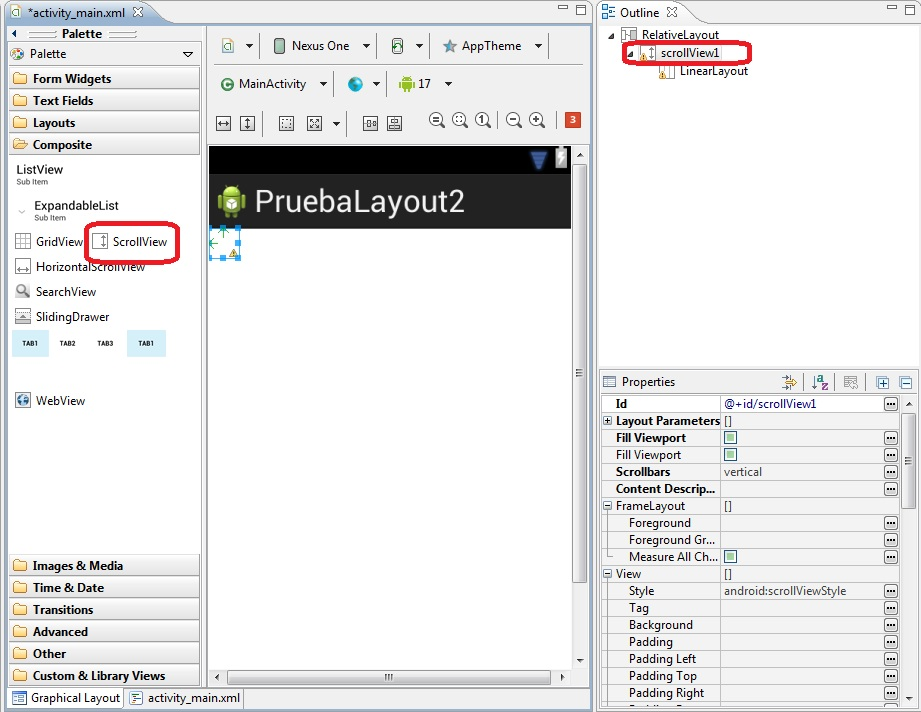
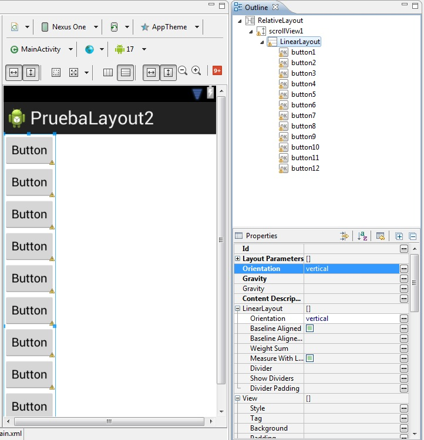
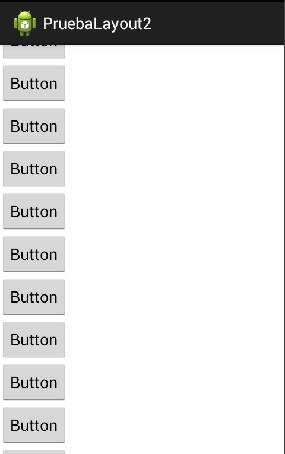
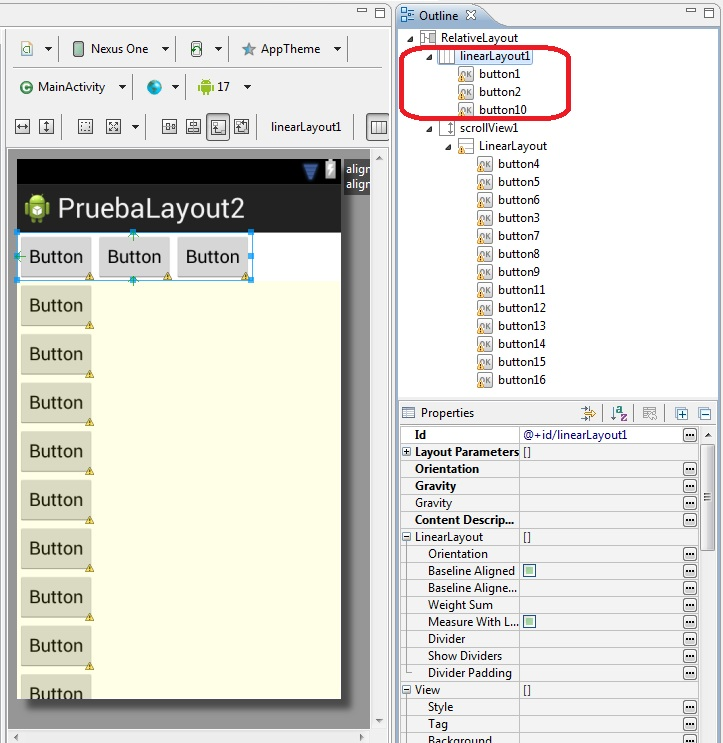
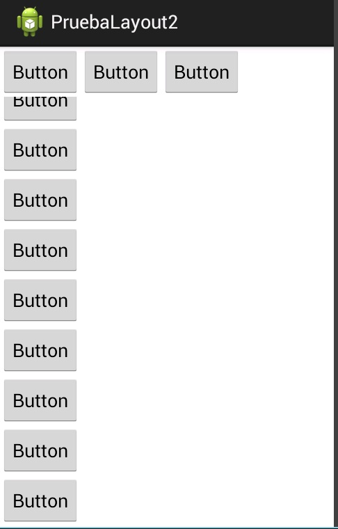

20 - Layout (ScrollView y LinearLayout)Ya se encuentra disponible el nuevo tutorial para aprender android con el nuevo entorno Android Studio propuesto por Google y que remplaza a Eclipse. |
El ScrollView junto con un LinearLayout nos permite disponer una cantidad de componentes visuales que superan la cantidad de espacio del visor del celular o tablet. Luego el usuario puede desplazar con el dedo la interfaz creada.
Disponer un control de tipo ScrollView (que se encuentra en la pestaña Composite). Como veremos automáticamente se crea una componente de tipo LinearLayout y fijemos la propiedad Orientation del LinearLayout con el valor vertical:
Luego dispongamos numerosos botones que superen la cantidad de espacio del dispositivo. Numerar los botones con los números del 1 en adelante (recordar que podemos ir arrastrando los botones a la ventana Outline):
Luego si ejecutamos el programa veremos que podemos desplazar (scroll) todo el contenido del visor con el dedo:
Este proyecto lo puede descargar en un zip desde este enlace: proyecto017.zip
Otra posibilidad para la implementación de una interfaz en Android es disponer un LinearLayout en la parte superior y un ScrollView en la parte inferior:
Esto hace que en tiempo de ejecución quede fijo el LinearLayout y podamos desplazar con el dedo el ScrollView que aparece en la parte inferior:
